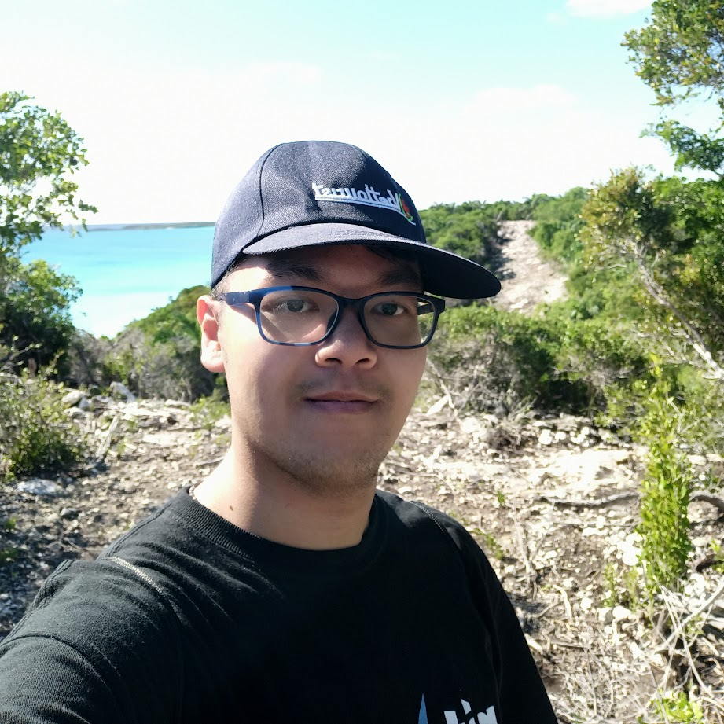
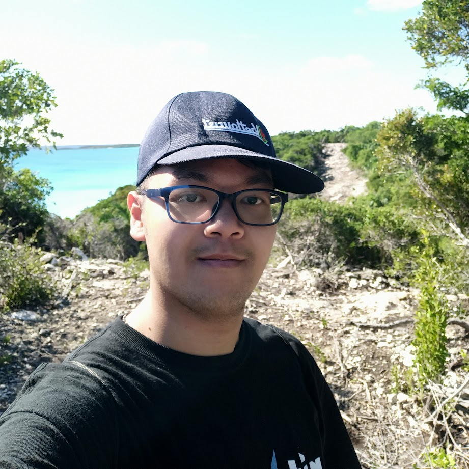

Traveling to another state for 5 days sounds fun... but is it still fun if you did not have a place to sleep? What if I did that on purpose to see if it was possible to live on only the kindness of completely strangers?
Read more
Traveling to another state for 5 days sounds fun... but is it still fun if you did not have a place to sleep? What if I did that on purpose to see if it was possible to live on only the kindness of completely strangers?
That is exactly what I did when I flew to Boston, Massachusetts without booking any place to sleep. At the time, I was enchanted by a YouTube channel called Yes Theory that had attempted to ask strangers if they could sleep in their house, capitalizing on the group members' charisma and the kindness of strangers. I figured that this was the perfect excuse to attempt living on nothing.
Before arriving in Boston, with my goal of relying on the kindness of strangers for a place to sleep, I had initially thought that were my approaches to fail, I would be able to find a quiet corner on a secluded street to lay down and rest for a few hours each night. Coming from the warm state of Georgia, I was completely unprepared for the harsh average temperature of 40 degree in Boston. When I landed in Boston at 10am on a Wednesday in March, I quickly realized that it would be impossible to sleep outside in the cold without getting dangerous frostbites.

So I quickly formulated a plan. The first day, I should take it easy, what am I good at? Oh, I'm a college student. At Georgia Tech, there are libraries that open 24 hours a day. I look like a college student so maybe I could pretend to be a student hard at work who fell asleep in the library of a nearby college. I knew MIT was nearby and upon searching the web, there was a library on campus that was open 24/7. Easy Peazy, I thought. There are still plenty of time before night come around, so I spent the next 7 hours exploring museum, shops, and art exhibits around Boston. I did not realize then that the following 3 hours would be the first of 3 scariest moments in my 100 hour challenge.

Around 5pm, I arrives on campus at MIT, visiting different libraries and scouting for a place to sleep. As I was walking around the libraries, I met a meek chinese girl who looks to be a college freshman. Seeing her gives me an idea. If I'm walking alone looking lost around campus, I might look suspicious and draw too much attention to myself. What if I ask her to give me a tour around campus? I chatted with her and she happily gave me a tour around campus. After 30 minutes into the tour and seeing how easily we connected over shared interests, I thought to myself, "What if I went one step further and ask if I could spend the night in her dorm room?" (it would be alot safer than sleeping in the library). Unfortunately, her parent were staying with her for the weekend and she did not have enough space to accommodate me. Oh well, I thought, I now know where the 24/7 library was and I could still sleep there.

So I went to scout the 24/7 section in the library. The entrance to the room had a card scanner lock and the room was a very small circular study space away from any bookshelves with visible cameras in every quadrant. I did not have any study books with me, and everyone that was there were studying intently. Fear starts creeping up through my veins as I realized that without any books on hand it would look very out of place for someone to just go to the library to rest their head on the desk and fall asleep. Worst yet, as I looked over one of the room divider, a sign stood erect stating that even though the library was open 24/7, everyone in the room needed to have an MIT ID after 6pm. What this meant was that even if I did manage to fall asleep in this area, I could potentially get arrested for illegal trespassing if security woke me up and asked for an ID.

I spent the next 2 hours scrambling around campus, to various study halls, gyms, dining rooms, and event sport fields, looking for another place that was open 24/7 where a student without ID could sleep.
When 8:30pm comes around, students were outside enjoying delicious boba and the smell of salty grilled sandwiches fill the air. As for me, the sights and smells were a mockery of my current predicament. I had a few hundred dollars and my credit card in my wallet incase of emergency, but my own pride did not permit me the freedom to enjoy the street foods as I grow more and more desperate to find shelter for the night as the sky slowly darkens.
Standing outside the largest building at MIT ("The Infinite") underneath a pitch black sky, I was contemplating tossing my pride aside and go book a hotel. Just then, two approachable looking students walked outside the building to return to their dormroom, talking excitedly with each other about their plans for tomorrow. "I'll try just one more time", I thought. "It was late and staying outside in freezing temperature could be fatal, If they reject me then I'll book a hotel and try again tomorrow"
I approached the two guys and asked, with obvious desperation in my voice, "Are either of you willing to let me sleep in your dorm room? I am from out of town and I don't have a place to sleep for the night" One guy completely ignored me like I was a dirty vagrant, but the other looked at me, pausing for a brief second, let out a laugh, and jovially said, "I can't let you in the dorms, but there is a common room inside the building behind us that may let you sleep overnight. There are couches and bean bags to sleep. It's call the 'Banana Lounge' because there are free bananas in the room for student to snack on while studying. I have to go but ask someone inside if they'll show you the way."
The building behind us, just like most other buildings at MIT, were locked with a smart card reader. Fortunately, one of the three doors were slightly propped open and I could walk inside. Getting inside the building is only the first step though, I needed to find one room along 4 corridors that seem to go on endlessly (It is literally named the "Infinite Corridor") Fortunately, it seems like everything finally fell into place. Barely 2 minutes has passed after walking down one corridor, I encountered a student walking toward me holding the largest banana I had ever seen. I asked him for direction to the Banana Lounge and at last I found my sanctuary.
The banana lounge may not be as luxurious as a hotel or as spacious as an Airbnb, but for someone who had spent the last 3 hours desperately scurrying around campus to find a place to sleep, the small hard sofa felt like the coziest bed in the world, and about an hour later I managed to have my first sleep of the 100 hour challenge.

The following morning I woke up at 5am to a completely empty banana lounge and explored the soundless infinite corridor (the long narrow hallway gets very scary in the middle of the night with not a soul in sight).
I brushed my teeth in the bathroom, tailgated a student into the gym for a quick shower, and took the subway to a nearby gaming convention where I spent most of the day working and playing.
Returning to the infinite building around 7pm, I was ready to once again rest my head at the banana lounge and sleep, but upon approaching the main entrance, I quickly discovered that the glass door that was propped open yesterday was shut tight today and would only open whenever a student tapped their key card on the smart reader. So I went around the building to look for a side entrance. While walking around the back of the building, I saw a Laos woman in her 50s striding toward the building so I approached and ask if she was a professor at MIT. She told me that she was a cleaner and she is still learning English, and so I followed her into the back entrance while chatting about grammar rules. Once inside, I went directly into the banana lounge and slept on the black bean bag which was much softer than the sofa, dozing off contently as some MIT students were discussing their weekend plans.


On Friday, I woke up early again to explore more of MIT, took the subway to Harvard university, look at local art exhibits, and returned to the Banana lounge around 9pm (the front door to the building was once again propped open). Once inside, I saw a man in his 50s walking around looking at the various posters on the wall. He was a very talkative man and could speak about any topics for hours. I told him that I came from Georgia and is only here for 5 days to attend a convention, finding it less costly to sleep in the Banana Lounge than in a hotel. He narrated his life story going through many homelessness and hitchhiking situations and after about 3 hours of chatting into 1am in the morning, we exchanged numbers and as he walked out the door to return to his apartment. He left me with a casual remark while exiting "If you ever get bored of sleeping here, just give me a call and we can talk more at my place".
Another student was studying in the room with us, and after the chatty man left, he came over to warn me that the guy looked like he was homeless and mentally disturbed for going into a university late at night and talking for hours. I kept both the student's warning and the man's offer to sleep at his place in mind as I doze off to sleep on the third night of the trip.
Did I take the chatty man up on his offer? Find out in the next module:What if I slept with a serial killer?


 
